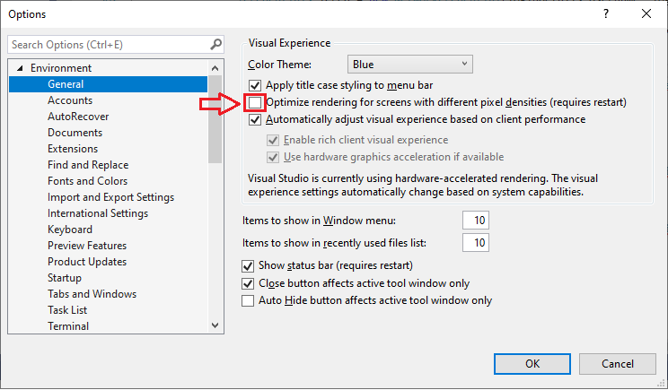
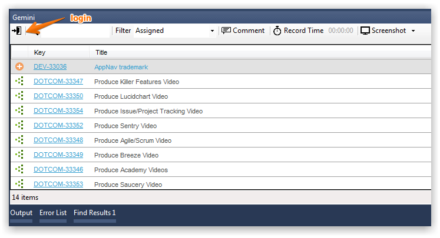

The Gemini connector for Microsoft Visual Studio provides work item visibility, screen capture and stop-watch style time recording.
The connector can be installed directly or from within Visual Studio. Pre VS2022 extensions are deprecated.
Download link:
Once installed, the Gemini connector is available from Tools → Gemini.
NoteIf you see a transparent window when you first click on the Gemini icon in Visual Studio, do the following:
In Visual Studio, go to Tools...Options...Environment...General and disable the Optimize Rendering screen option

Gemini connector displays items in a grid where you click to select an item. Once selected you can attach a screenshot, add a comment or use stop-watch time recording.

Follow the Gemini Desktop guide.